Michael Birken
o__1@hotmail.com
http://www.meatfighter.com/
make birken
./birken < 17_columns_wide_paint_by_numbers_file
./birken < examples/ioccc.txt
perl -e 'map{map{print int(rand()*8);}(0..16);print chr(10);}(0..30);' | tr '[0-4]' ' '| ./birken
This program also wins the “Most amusing abuse of the iocccsize tool” award; although not the absolute best: it is possible to achieve 0 by writing
/* *\
/....
The game of Tetris had been used in many endeavors, from studying algorithmic complexity to treating PTSD. Using it for painting by numbers looks like a novel idea.
This document is best viewed as an HTML file in a browser that supports animated gifs. Extract examples.tbz2 for the sample input files.
tar -xjvf examples.tbz2
By rotating, positioning and dropping a predetermined sequence of pieces, this program exploits the mechanics of Tetris to generate arbitrary images.
The algorithm converts pixels from a source image into squares in the Tetris playfield, one row at a time from the bottom up. To generate an individual square, the algorithm assembles a structure consisting of a rectangular region fully supported by a single square protruding from the bottom. When the rectangular region is completed, its rows are cleared, leaving behind the protruding square. Three examples of the process appear below.
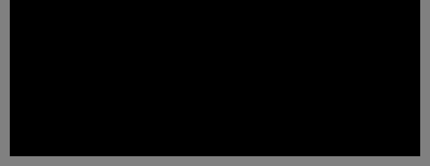
During construction of a row, all of the squares produced by this method must be supported. In the images above, the generated squares are supported by the floor of the playfield. However, if an arbitrary row contains holes, it may not provide the support necessary for the construction of the row above it. The algorithm solves this problem by constructing a flat platform on top of the row with holes. In the animation below, a platform is built above a row comprising of a single red square. The platform is a temporary structure and inserting the final piece removes it.
Below, a row containing 5 red squares is deposited above a row containing 3 red squares. This is accomplished by building a flat platform on top of the lower row. The platform provides the support necessary to generate the 5 red squares. Finally, the platform is removed by inserting its final piece and the new row drops into place. Note, if the algorithm needed to generate the rows in the opposite order (a row of 3 red squares above a row of 5 red squares), a platform would not be necessary.
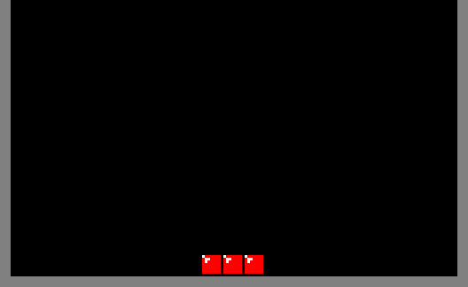
For reference, the names of the 7 Tetriminos (the game pieces) appear in the table below.
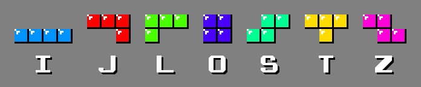
This algorithm was tailored specifically to render sprites from early video games. Those games packed graphics into 8×8 tiles where 2 bits were dedicated to each pixel. Consequentially, sprites usually contained only 3 colors plus transparent regions and they were typically sized either 16×16 or 16×32 pixels.
The animation below depicts all the patterns used to emit single squares. J, T and L Tetriminos are used interchangeably within each pattern to produce the protruding square at the bottom. The algorithm assigns those Tetriminos to the 3 colors present in the sprite. The remaining Tetriminos are assigned arbitrary colors. And, all the colors remain constant during gameplay.
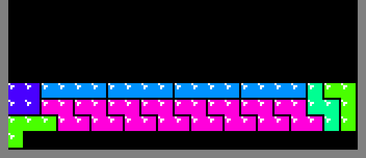
It is not possible to emit a square of all 3 colors in the first 2 and the last 2 columns due to the shapes of the 3 Tetriminos. As a result, the minimal width of a playfield to accommodate a 16 pixel wide sprite is 2 + 16 + 2 = 20 squares. However, it turns out that 20 is too small.
As illustrated below, the region above the protruding square cannot exclusively consist of a single row because the only pieces that could fit, the I Tetriminos, are unsupported.
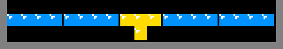
With 2 rows, the only means of spanning the full playfield width in a way that remains supported is to use S and Z Tetriminos. But, that will always leave holes in the upper row.
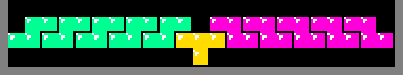
The minimal number of rows required above the protruding square is 3 and as shown repeatedly above, such patterns do exist. 20 squares is the minimal width required to fit a 16 pixel wide sprite. But, 20 × 3 + 1 = 61, which is not divisible by 4 and hence not constructible out of Tetriminos. However, a width of 21 yields 21 × 3 + 1 = 64, which can be built with 16 Tetriminos. That width actually enables the algorithm to render sprites up to 17 pixels wide.
The original Tetris playfield is 10×20 squares, a 1:2 ratio. The program maintains that ratio by using a playfield of 21×42 squares.
Since J, T and L Tetriminos are used interchangeably to produce the emitted square and 3 squares of those Tetriminos contribute to the row above it, there are 21 − 3 + 1 = 19 single square emitting patterns. However, due to mirror symmetry, there are really only 10 patterns. Clearing 3 rows works for the majority of them. But, an exhaustive computer search revealed that 2 of the patterns require more. The next possible option is 7 rows since 21 × 7 + 1 = 148, requiring 37 Tetriminos. As the images below show, those patterns do exist.
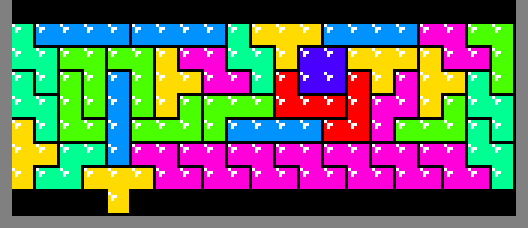
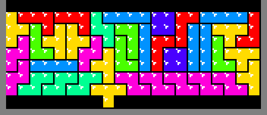
Before a row is constructed, the algorithm inspects the row below it. If the row below fails to provide support for all of the squares to be deposited above it, then a temporary platform is required. When that platform is removed, the new row will drop, leaving some of the squares apparently floating above empty space due to the way that gravity works in the original Tetris.
The illustration below depicts the 10 platform patterns (really only 5 considering mirror symmetry). The construction of a platform begins by dropping a T Tetrimino on top one of the squares of the last generated row. The remaining Tetriminos support each other down to that first T. Meaning, as long as the previously generated row contains at least 1 square, like the red square below, then it is possible to construct a flat platform above it for the generation of the next row.
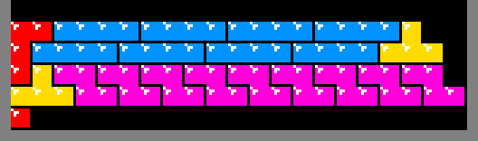
In the middle of platform construction, the bottom row gets completed and cleared, leaving 3 rows above it. The final J or L Tetrimino that will remove those rows is not inserted until the square emitters are done generating the next row of the sprite on top of the platform. That final piece precludes square emission in the first and last 2 columns. But, as discussed above, the square emitters are limited to the 17 inner columns due to the geometry of the J, T and L Tetriminos used in the process.
Also, of the 19 possible ways to start constructing a platform on top of a T Tetrimino, only the 10 patterns shown above exist.
The input sprite is represented textually. Digit characters 0 to 7 correspond to pixels with colors from the palette below.
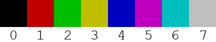
As discussed above, sprites are limited to a maximum of 3 colors from this palette.
All other characters are interpreted as transparent pixels.
The maximum permissible size of the input text is 32 rows by 17 columns. Row length can vary as long as no single row exceeds 17 characters.
Every row must contain at least one palette digit character.
The examples directory contains several sprites in this textual format that can be fed into standard input. Several examples take advantage of the Tetris playfield background color. Instead of using character 0, internal regions marked as transparent are effectively rendered as black.
The program conceptually uses Tetris as an output device similar to a line printer. It restricts itself to those operations that can be performed on the Tetris playfield: spawning, rotating, positioning and dropping Tetriminos. This process is visually represented using ANSI escape sequences.
The rate at which the program plays Tetris is completely determined by the rate in which the terminal application receives and displays the ANSI escape sequences.
To slowdown the output programmatically, introduce a delay immediately after the call to fflush.
This program demonstrates how to exploit a bug in IOCCC size tool version 2013-07-30-v17. The first line of the program is reproduced below.
char*_ = "'""/*";
If that line is added to the top of any program, the tool will report a size of 8.
./iocccsize -i < prog.c
8
When that line is deleted from this program, the tool properly reports the secondary size limit of the program as 2048.
./iocccsize -i < prog.c
2048
Although this bug provides an easy means of circumventing contest rule 2, as demonstrated from the size value, this entry is not necessarily striving for a ‘worst abuse of the rules’ award.
This program is almost, but not quite, entirely unlike a demonstration of good programming practices. Contrary to other programs, an inspection of this one will certainly reveal that it possesses tea, not to mention an affinity for the constant 42.
Variables are named and ordered to spell out, “Tetris”, “ELORG”, “DVK” and the aforementioned “Tea”. ELORG is the abbreviation for Elektronorgtechnica, the former Soviet state owned computer organization that handled the worldwide Tetris intellectual property rights. DVK is the line of Soviet PDP-11-compatible personal computers capable of running Alexey Pajitnov’s original 1984 Tetris prototype.
Carefully selected variable names also yielded wonderful expressions like l=0, O=0, O=1 and while(O). “Tetris” also makes a second appearance of sorts:
[T][e][t]--; while(R+i) { s
The source is formatted to resemble the Tetris playfield midgame. It is also an homage to all the past IOCCC entries formatted as a compact block of text; the T, orientated appropriately to reflect its name and the first letter in the title of the game, is just a moment away from producing such a text block.
Three tables are encoded as separate strings within the program:
The first string stores the coordinates of the squares of the 19 distinct rotations of Tetriminos (see below). Since a Tetrimino is a chain of 4 squares, all Tetriminos fit within a 4×4 matrix. To determine the coordinates of the squares, the Tetrimino is pushed to the upper-left of the matrix. Each coordinate value requires 2 bits of storage. Consequentially, the four x-coordinates and the four y-coordinates were packed into separate octets. To convert the octets into valid ASCII characters, the squares were sorted such that the least significant bits stored the largest coordinate values. The results were offset by 35, the # character, which is 1 beyond the ASCII value of ", making it easier to pack into a string. None of the resultant values are beyond ASCII 127. The coordinates for all 19 rotations fit in a string of length 38.
The second string stores the single square emitter patterns and the platform patterns. Each pattern is a sequence of pairs, { Tetrimino index, drop x-coordinate }. As mentioned, there are 19 distinct rotations, requiring 5 bits of storage for the Tetrimino index. Another 5 bits is required for the drop x-coordinate since there are 21 columns in the playfield. Necessarily, the pair is stored as 2 separate characters. By offsetting them by 40, the ( character, the resultant string almost resembles a long and complex mathematical expression. The program takes advantage of mirror symmetry by only storing 10 single square emitter patterns and 5 platform patterns. The pattern lengths are not encoded within the string. Rather, they are embedded within the string decoding logic.
The third string conceptually stores the default colors of the 19 rotations. A 3-bit value is assigned to each, covering the 7 possible colors. In addition, when a mirrored pattern is executed, J exchanges with L and S exchanges with Z, necessitating a second list of 3-bit color values. Pairs of color values (6 bits) fit comfortably into a character that is offset by #. The result is a string of length 19.
The program is full of subtle obfuscations:
The unary decrement operator is used in conjunction with global variable automatic zero initialization to set variables to -1.
The boolean expression of the form, x + 1, is used multiple times to determine if a value is not -1. Similarly, expressions of the form x - y are used to determine if x != y.
Several arrays store unrelated data in segments throughout the array to reduce named variables.
The x["..."] trick appears once.
Variable i is less than necessary.
A cursorily glance at the expressions 4&&L and m&&e==m suggests that they always evaluate to true.
The varying single square emitter pattern lengths are resolved during string decoding using the clever expression, (i & 3) - 3, which identifies pattern 3 and 7 as longer.
The file size of prog.c is a prime number. Deleting the first line also produces a prime-sized program. These properties do not qualify the program as a prime number generator.
Due to the contest code size constraint, some optimizations reluctantly had to be omitted. For example, multi-square emitters are possible:
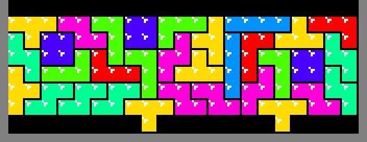
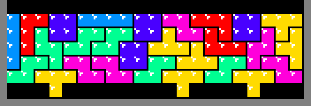
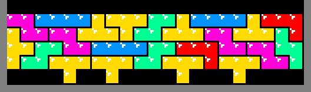
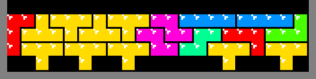
In fact, using dynamic programming and creative heuristics, real-time search is possible, enabling patterns like this:

And, even this:
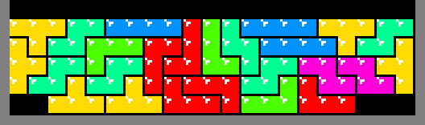
In addition, it is possible to extend the algorithm to 6 colors instead of just 3. This is achieved using I, S and Z to produce the protruding square. A series of rectangular regions are constructed above those Tetriminos to erode them down to a single emitted square.
The details of these enhancements are left as an exercise to the reader.
The following example files were created by the program author. They can be freely used and distributed.
format.txt - The layout of the programhelloworld.txt - Hello World, Tetris-stylehilbert.txt - A graphic based on the Hilbert curveioccc.txt - IOCCClandon.txt - Portrait of a man with glassesleo.txt - Portrait of a man without glassesrhino.txt - A purple rhinocerossimon.txt - Portrait of a man without hairThe following files are based on graphics from non-free, copyrighted video games. The use of a limited number of textual representations of the graphics for the demonstration of this program qualifies as fair use as such files do not significantly impede the right of the copyright holder to sell the copyrighted material and it is not being used to generate profit in this context. The origin of each file is detailed below (character, game, company, year).
belmont.txt - Simon Belmont, Castlevania, Konami, 1986bloober.txt - Bloober, Super Mario Brothers, Nintendo, 1985bomberman.txt - Bomberman, Bomberman, Hudson, 1983boo.txt - Boo, Super Mario Brothers 3, Nintendo, 1988bub.txt - Bub, Bubble Bobble, Taito, 1986cheepcheep.txt - Cheep Cheep, Super Mario Brothers, Nintendo, 1985gurin.txt - Gurin, Binary Land, Hudson, 1983koopaparatroopa.txt - Koopa Paratroopa, Super Mario Brothers, Nintendo, 1985lakitu.txt - Lakitu, Super Mario Brothers, Nintendo, 1985mario.txt - Fire Mario, Super Mario Brothers, Nintendo, 1985mspacman.txt - Ms. Pac-Man and Ghost, Ms. Pac-Man, Midway, 1982paranaplant.txt - Piranha Plant, Super Mario Brothers, Nintendo, 1985samus.txt - Samus Aran, Metroid, Nintendo/Intelligent Systems, 1986toad.txt - Toad, Super Mario Brothers 2, Nintendo, 1987The origin of the remaining files are described below:
happyface.txt - Based on a smiley; rights unknownsnoo.txt - 8-bit version of Snoo, Reddit’s alien mascot |
© Copyright 1984-2015,
Leo Broukhis, Simon Cooper, Landon Curt Noll
- All rights reserved |